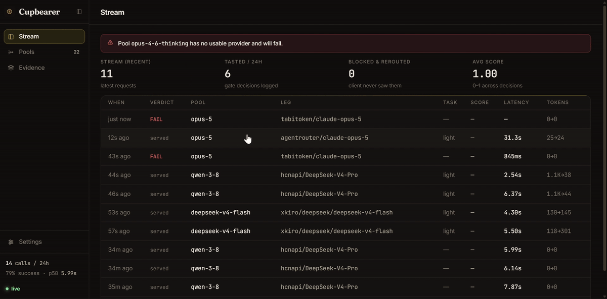

One OpenAI-compatible endpoint in front of the free-tier and paid keys you already own. Key pooling, rotation, automatic failover — and quality-verified routing with the evidence to prove it. Self-hosted, MIT, zero telemetry.
Bring your own keys. Nothing leaves your machine.
# install, then: pick providers, paste keys, get a starter pool npx cupbearer setup npx cupbearer serve # gateway on http://127.0.0.1:4143 curl http://127.0.0.1:4143/v1/chat/completions \ -H "content-type: application/json" \ -d '{"model":"smart","messages":[{"role":"user","content":"hello"}]}'
export ANTHROPIC_BASE_URL=http://127.0.0.1:4143 export ANTHROPIC_AUTH_TOKEN=local claude
Cupbearer serves the Anthropic Messages API (/v1/messages) alongside OpenAI's.
Settings → Models → OpenAI Base URL: http://127.0.0.1:4143/v1 API key: anything Model: smart
Any OpenAI-speaking tool works the same way.
Failover on a 500 is table stakes. Cupbearer also refuses models that answer but can't do the job.
Every request is profiled heuristically — tools, images, size, output budget → a required quality tier and hard capabilities. $0, no added latency.
The cheapest sufficient leg of your pool serves first; stronger legs back it up. Keys rotate with real health tracking and quota awareness.
A downgrade's response is checked before the client sees a byte: JSON validity, empty/refusal, looping output, truncation, tool-arg sanity — plus optional LLM-as-judge on your own keys.
Failing the bar is just another pre-commit failover. Every verdict is pressed into the evidence log — score, reasons, what happened.

Every response gets its verdict sealed. The client only ever sees what passed.
One command, honest numbers — failures included, nothing cherry-picked.
npx cupbearer benchmark --pool smart --reps 5
| Metric | Sample run¹ |
|---|---|
| Task pass rate | 100.0% (12/12) |
| Cost | $0.00 spent (free-tier keys) |
| Quality gate | 10 downgrade attempts evaluated — 6 held, 4 blocked & rerouted |
¹ Dry run against bundled stub providers — see the full example and regenerate against your own pool for real numbers.
| Hand-rolled LiteLLM/OpenRouter config | Cupbearer | |
|---|---|---|
| Key pooling & rotation | yes, configured per model | yes, with health states & auto-revival |
| Failover on errors | yes | yes — deferred-commit, pre-byte only |
| Quality gate before serving | no — first answer wins | heuristics + optional judge, evidence logged |
| Per-request quality tiering | manual model routing | automatic profiling, cheapest sufficient leg |
| Decision evidence & reports | grep the logs | SQLite + dashboard + one-command benchmark |
| Setup | YAML archaeology | one guided command |
LiteLLM is a great universal proxy — Cupbearer is the layer it doesn't have: proof that a cheaper model was actually good enough.
Cupbearer only uses keys you configure locally, talks only to the official API endpoints of the providers you choose, and never transmits anything anywhere else. No bundled keys, no shared pools, no resale — use your own accounts and respect your providers' terms of service.